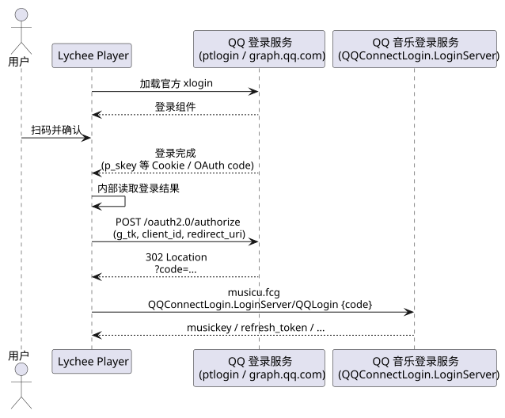
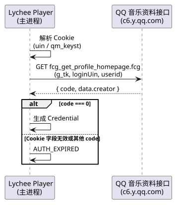
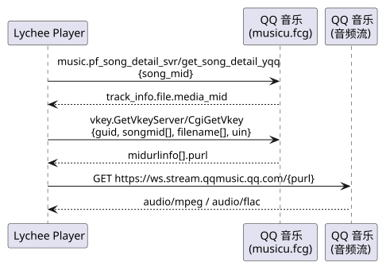

| 术语 | 定义 |
|---|---|
| 上游（Upstream） | QQ 音乐的内容 CGI、登录服务、音频流服务器与封面图服务的统称。 |
musicu.fcg |
上游统一的 JSON RPC 入口：请求体包含 comm 与 req_0（或 req），响应在 req_0 / req 中返回数据。 |
songMid |
歌曲在 QQ 音乐的业务主键（字符串）。内容接口与播放链接请求均以它为标识。 |
mediaMid |
音频文件级标识。付费歌曲的 mediaMid 可能与 songMid 不同；vkey 请求的 filename 必须使用它。 |
vkey |
上游签发的音频流访问令牌，附于流 URL 查询参数，有时效；失效后需要重新获取。 |
purl |
vkey 接口返回的相对或绝对播放地址。其查询参数（guid / vkey / uin / fromtag 等）与令牌绑定，必须整体复用。 |
| 播放链接 | 由 purl 拼成的音频流 URL；相对路径拼为 https://ws.stream.qqmusic.qq.com/{purl}。 |
登录凭证（Credential） |
QQ 登录换取的访问凭据：musicid、musickey 及续期所需字段。仅主进程持有。 |
musicid |
QQ 音乐账号的数字标识；用于 Cookie、comm.uin、歌单与资料请求。 |
p_skey |
QQ 登录成功后写入 xlogin 会话的 Cookie，用于计算 OAuth g_tk 并完成 OAuth 授权。 |
g_tk（OAuth） |
由 p_skey 经 hash33(p_skey, 5381) 计算的 CSRF 令牌，用于 OAuth authorize。 |
g_tk（资料） |
由 musickey 经 hash33(musickey, 5381) 计算的 CSRF 令牌，用于用户资料请求。 |
| xlogin | QQ 官方扫码登录组件；登录页以独立视图加载，应用不接触用户密码。 |
| 约定 | 内容 |
|---|---|
| 契约范围 | 只记录应用实际消费的字段与方法；上游完整定义以官方文档为准。QQ 音乐未提供公开接口文档，本文档的权威来源是实际消费的请求与响应字段。 |
| 上游隔离 | 上游隔离规则见 CORE §2；本层只消费 CORE §4.1 定义的内部模型。 |
| 凭证注入 | 请求携带 Cookie：uin、qqmusic_uin、qm_keyst、qqmusic_key。凭证、Cookie 与完整播放链接不写入日志。 |
| 播放链接拼装 | purl 为绝对 URL 时直接使用；为相对路径时只在前面拼 https://ws.stream.qqmusic.qq.com/，不重建查询参数。 |
| 音质回退 | 先尝试请求档位；该档位无 purl 时，再按 flac → 320k → 128k 顺序尝试其余档位（跳过已尝试的请求档位）；全部档位无链接时返回 NO_STREAM。 |
| 重试 | HTTP 429、HTTP 非 2xx 与上游瞬时繁忙码（2001 / 104604）做短退避重试；连接失败 / 超时不重试，直接映射为 UPSTREAM_NETWORK。JSON 解析失败、响应结构缺失与未知错误码不重试，直接映射为 UPSTREAM_CHANGED。 |
| 错误映射 | 上游业务码、HTTP 状态与网络异常统一映射为内部 ErrorCode；映射表见 §4.2。 |
| 登录会话隔离 | xlogin 使用独立 session 分区，只放行腾讯相关域名（qq.com / gtimg.cn / weixin.qq.com）导航与子窗口；登录发起前与结束 / 超时后各清理一次。 |
| 密钥环 | 凭证通过 Electron safeStorage（Linux 后端为 libsecret）加密后落盘；密钥环不可用时拒绝保存 / 加载凭证并禁用登录；旧明文仅在密钥环可用时迁移，否则拒绝登录，绝不退化为明文。 |
| D-Bus | MPRIS 依赖会话总线；D-Bus 不可用时 MPRIS 静默降级，不影响应用内播放。规范见 MPRIS Specification。 |

p_skey 与 p_uin / pt4_token / uin 之一，才进入 OAuth 换证，避免把未完成登录误判为成功。will-navigate / will-redirect / did-navigate 的 URL 捕获 code，直接进入换证。QQConnectLogin.LoginServer/QQLogin 返回 musickey 与续期字段；应用解析为 Credential 并在主进程入库。AUTH_EXPIRED，不保存凭证；登录视图在结束或超时后清理。
uin 与 qm_keyst；缺失或格式无效直接返回 AUTH_EXPIRED。g_tk 由 hash33(musickey, 5381) 计算；code === 0 视为登录态有效。Credential，保存在主进程；不保存浏览器 Cookie 原文。AUTH_EXPIRED，提示用户重新获取 Cookie。
get_song_detail_yqq 获取 media_mid，再按请求音质拼出 vkey 的 filename。guid、歌曲 songmid 数组、对应 filename 数组与账号 uin。midurlinfo[].purl 为空表示该曲在该档位无链接；按音质回退顺序继续尝试。| 接口 | 方法 / 路径 | 用途 |
|---|---|---|
| 内容 RPC | https://u.y.qq.com/cgi-bin/musicu.fcg（内容请求 GET；登录换证 / 续期 POST） | 统一 musicu 请求入口；搜索、歌曲详情、vkey、歌单、资料、登录与续期。 |
| 搜索 | music.search.SearchCgiService / DoSearchForQQMusicDesktop | 按单曲 / 歌手 / 专辑 / 歌单搜索。 |
| 歌曲详情 | music.pf_song_detail_svr / get_song_detail_yqq | 获取 media_mid 与歌曲展示字段。 |
| 播放链接 | vkey.GetVkeyServer / CgiGetVkey | 按音质获取 purl。 |
| 歌单详情 | music.srfDissInfo.DissInfo / CgiGetDiss | 分页拉取歌单元数据与歌曲列表。 |
| 我的歌单 | music.musicasset.PlaylistBaseRead / GetPlaylistByUin | 当前账号创建 / 收藏的歌单列表。 |
| 会话续期 | music.login.LoginServer / Login | 用 refresh_token 换新 musickey。 |
| QQ 登录换证 | QQConnectLogin.LoginServer / QQLogin | 用 OAuth code 换取登录凭证。 |
| 歌词 | GET https://c.y.qq.com/lyric/fcgi-bin/fcg_query_lyric_new.fcg | 返回明文 LRC 与翻译。 |
| 用户资料 | GET https://c6.y.qq.com/rsc/fcgi-bin/fcg_get_profile_homepage.fcg | 昵称与头像；失败不影响登录态。 |
| 官方登录组件 | https://xui.ptlogin2.qq.com/cgi-bin/xlogin | 登录页内嵌的官方扫码组件。 |
| OAuth 授权 | POST https://graph.qq.com/oauth2.0/authorize | 用 xlogin 的 Cookie 换取 code。 |
| 音频流 | GET https://ws.stream.qqmusic.qq.com/{purl} | 渲染进程加载的音频流；加载边界见 USER §3.1。 |
| 接口 | 关键请求参数 |
|---|---|
| 搜索 | num_per_page · page_num · query · search_type（0 单曲 / 1 歌手 / 2 专辑 / 3 歌单） · searchid |
| 歌曲详情 | song_mid |
| vkey | guid · songmid[] · songtype[]（全 0） · filename[] · uin · loginflag · platform |
| 歌单详情 | disstid · dirid · tag · song_begin · song_num · userinfo · orderlist · onlysonglist |
| 我的歌单 | uin |
| 会话续期 | openid · access_token · refresh_token · expired_in · musicid · musickey · refresh_key · loginMode |
| QQ 登录换证 | comm.tmeLoginType · param.code |
| 歌词 | songmid · format · nobase64 · trans · g_tk · loginUin · hostUin · inCharset · outCharset · notice · platform · needNewCode |
| 用户资料 | g_tk · format · inCharset · outCharset · notice · cid · needNewCode · loginUin · hostUin · userid · reqfrom |
| OAuth authorize | response_type · client_id · redirect_uri · scope · state · switch · from_ptlogin · src · update_auth · openapi · g_tk · auth_time · ui |
| 端点 | User-Agent | Referer | 特别配置 |
|---|---|---|---|
搜索 DoSearchForQQMusicDesktop | 桌面 Chrome 120（Windows） | https://y.qq.com/ | 不携带 comm |
歌曲详情 get_song_detail_yqq | 桌面 Chrome 120（Windows） | https://y.qq.com/ | Cookie 凭证 |
vkey CgiGetVkey | 桌面 Chrome 120（Windows） | https://y.qq.com/ | Cookie 凭证 |
歌单详情 CgiGetDiss | 桌面 Chrome 120（Windows） | https://y.qq.com/ | Cookie 凭证 |
我的歌单 GetPlaylistByUin | 桌面 Chrome 120（Windows） | https://y.qq.com/ | Cookie 凭证 |
歌词 fcg_query_lyric_new.fcg | 桌面 Chrome 120（Windows） | https://y.qq.com/ | Cookie 凭证；g_tk=5381 |
用户资料 fcg_get_profile_homepage.fcg | 桌面 Chrome 120（Windows） | https://y.qq.com/ | Cookie 凭证；g_tk=hash33(musickey, 5381) |
QQ 登录换证 QQLogin | iPhone iOS 13 | https://y.qq.com/ | JSON；不携带凭证 |
会话续期 Login | 桌面 Chrome 120（Windows） | https://y.qq.com/ | JSON；携带当前凭证 |
| OAuth authorize | 桌面 Chrome 120（Windows） | https://xui.ptlogin2.qq.com/ | form；Cookie 为 xlogin 会话；redirect: manual |
| 官方登录组件 xlogin | Chromium 默认 | — | WebContentsView 加载，不注入自定义请求头 |
音频流 ws.stream.qqmusic.qq.com | 应用默认 | — | 由播放器直接加载 |
封面图 y.gtimg.cn | 应用默认 | — | 由播放器直接加载 |
comm；其余 musicu 请求按需携带 uin、format、ct、cv。g_tk 只用于 OAuth 授权、歌词与用户资料请求。interface MusicuRequest {
comm?: {
uin?: number;
format?: 'json';
ct?: number;
cv?: number;
tmeLoginType?: number;
tmeAppID?: string;
};
req_0?: { module: string; method: string; param: Record<string, unknown> };
req?: { module: string; method: string; param: Record<string, unknown> };
}
interface MusicuResponse<T> {
code: number;
req_0?: { code: number; data?: T; message?: string };
req?: { code: number; data?: T; message?: string };
}
interface OAuthAuthorizeRequest {
response_type: 'code';
client_id: string;
redirect_uri: string;
scope: string;
state: string;
g_tk: string;
auth_time: string;
ui: string;
}
interface OAuthAuthorizeResponse {
status: number; // 302
location: string; // 携带 ?code=...
}
interface QqLoginRequest {
comm: { tmeLoginType: number };
req: {
module: 'QQConnectLogin.LoginServer';
method: 'QQLogin';
param: { code: string };
};
}
| 上游信号 | 内部 ErrorCode | 含义 / 处理 |
|---|---|---|
1000 / 104401 / 104400 | AUTH_EXPIRED | 凭证过期或无效；提示重新登录。 |
104604 / 2001 | QUOTA_LIMITED | 上游瞬时繁忙；短退避重试，仍失败则提示稍后再试。 |
100001 | QUOTA_LIMITED | 上游限流；不重试，直接提示稍后再试。 |
104003 | NO_STREAM | 当前账号无该音质权限；播放链接流程继续回退。 |
20261 / 20271 / 20272 / 20274 / 20277 / 20278 / 20279 / 20450 | AUTH_EXPIRED | 登录参数、验证码、账号绑定、账号受限或封禁；提示具体原因或重新登录。 |
HTTP 429 | QUOTA_LIMITED | 上游限流；退避重试。 |
| HTTP 非 2xx | UPSTREAM_NETWORK | 网络或服务不可用；短退避重试，仍失败则提示网络异常。 |
| 连接失败 / 超时 | UPSTREAM_NETWORK | 网络或服务不可用；不重试，直接提示网络异常。 |
| JSON 解析失败 / 缺少必需字段 / 未知业务码 | UPSTREAM_CHANGED | 上游结构变化；不重试，提示稍后再试。 |
interface QqSong {
id?: number | string;
mid?: string;
name?: string;
title?: string;
interval?: number;
singer?: Array<{ mid?: string; name?: string }>;
album?: { mid?: string; name?: string };
pay?: { pay_play?: number; price_album?: number };
file?: { media_mid?: string };
}
interface QqVkeyData {
midurlinfo?: Array<{
songmid?: string;
purl?: string;
result?: number;
}>;
}
interface QqPlaylistData {
dirinfo?: {
id?: string | number;
title?: string;
picurl?: string;
songnum?: number;
};
songlist?: QqSong[];
}
interface QqMineData {
v_playlist?: Array<{
dissid?: string | number;
disstid?: string | number;
tid?: string | number;
dirId?: string | number;
dissname?: string;
name?: string;
title?: string;
dirName?: string;
imgurl?: string;
picurl?: string;
cover?: string;
bigpicUrl?: string;
song_count?: number;
songnum?: number;
songNum?: number;
song_cnt?: number;
}>;
}
interface QqSearchData {
body?: {
song?: { list?: QqSong[] };
singer?: { list?: Array<{ singerMID?: string; singerName?: string }> };
album?: { list?: Array<{ albumMID?: string; albumName?: string }> };
songlist?: { list?: QqMineData['v_playlist'] };
meta?: { sum?: number; estimate_sum?: number };
};
}
interface QqLyricResponse {
code?: number;
retcode?: number;
lyric?: string;
trans?: string;
}
interface QqProfileResponse {
code?: number;
data?: {
creator?: {
nick?: string;
headpic?: string;
hostuin?: string;
};
};
}
interface Credential {
musicid: string;
musickey: string;
expiredAtMs: number | null;
refreshKey?: string;
refreshToken?: string;
accessToken?: string;
openid?: string;
unionid?: string;
loginType?: number;
}
interface QqLoginPayload {
musickey?: string;
str_musicid?: string;
musicid?: string;
uin?: string | number;
qq?: string | number;
keyExpiresIn?: number;
musickeyCreateTime?: number;
refresh_key?: string;
refresh_token?: string;
access_token?: string;
openid?: string;
unionid?: string;
loginType?: number;
}
| 对象 | 消费字段 | 说明 |
|---|---|---|
QqSong |
id · mid · name / title · interval · singer[] · album · pay · file.media_mid |
interval 单位为秒；pay.pay_play 与 price_album 用于权限角标。 |
QqVkeyData |
midurlinfo[].songmid · purl · result |
purl 为空表示该档位无链接；当前实现不消费 result。 |
QqPlaylistData |
dirinfo.id / title / picurl / songnum · songlist[] |
单次最多返回 100 首；按 songnum 分页补齐。 |
QqMineData |
v_playlist[] 的 dissid / disstid / tid / dirId · 名称 · 封面 · 歌曲数 |
过滤空 ID 与 0。 |
QqSearchData |
body.song.list · body.singer.list · body.album.list · body.songlist.list · body.meta.sum / estimate_sum |
搜索类型由 search_type 选择；空结果重试一次。 |
QqLyricResponse |
code · retcode · lyric · trans |
-1901 表示无歌词，返回空歌词而非错误。 |
QqProfileResponse |
data.creator.nick · headpic |
头像地址的 http: 前缀改为 https:。 |
QqLoginPayload |
musickey · str_musicid / musicid / uin / qq · keyExpiresIn · musickeyCreateTime · refresh_* · access_token · openid · unionid · loginType |
凭证对象可能嵌套在 data / credential / result 中；以包含 musickey 的对象为准。 |
Credential |
musicid · musickey · expiredAtMs · refreshKey · refreshToken · accessToken · openid · unionid · loginType |
项目归一化后的登录凭证；仅主进程持有，Credential 的续期字段不跨 IPC。 |
| 转换 | 规则 |
|---|---|
QqSong → Song |
mid → songMid；id 转字符串 → songId；name ?? title → name；interval × 1000 → durationMs；singer[] 取 mid / name；album 取 mid / name；pay 映射为 PayInfo。 |
QqSong.pay → PayInfo |
price_album > 0 → album；否则 pay_play === 1 → vip；pay_play === 0 → free。 |
Quality → vkey filename |
128k → M500{mediaMid}.mp3；320k → M800{mediaMid}.mp3；flac → F000{mediaMid}.flac。 |
QqVkeyData → UrlResult[] |
按 songmid 匹配 purl；purl 非空则生成播放链接并记录实际档位；无链接的歌曲继续按回退顺序尝试。 |
purl → 播放链接 |
绝对 URL 原样使用；相对路径拼接 https://ws.stream.qqmusic.qq.com/，查询串保持不变。 |
QqPlaylistData → PlaylistDetail |
dirinfo → PlaylistMeta；songlist[] → Song[]；按 dirinfo.songnum 判断是否继续分页。 |
QqMineData → PlaylistMeta[] |
dissid ?? disstid ?? tid ?? dirId ?? id → id；名称、封面与歌曲数按字段回退链取值；过滤空 ID 与 0。 |
QqSearchData → SearchResult |
song.list → songs；singer.list / album.list / songlist.list 分别映射为 Singer[] / Album[] / PlaylistMeta[]；meta.sum ?? estimate_sum → total。 |
QqLyricResponse → Lyric |
lyric → lrc；trans 去空白后为空则 null；-1901 → 空歌词。 |
QqProfileResponse → UserProfile |
nick 缺省回退到 musicid；headpic 的 http: 改为 https:。 |
QqLoginPayload → Credential |
musicid 去前导 o 并校验为数字；expiredAtMs = musickeyCreateTime + keyExpiresIn × 1000（秒 / 毫秒时间戳自适应）；续期字段按存在性拷贝。 |
专辑 mid → 封面 URL |
https://y.gtimg.cn/music/photo_new/T002R{size}x{size}M000{mid}.jpg；size 为 300 / 500 等。 |
Song / PlaylistMeta / PlaylistDetail / SearchResult / Lyric / UserProfile / UrlResult 的定义见 CORE §4.1；Credential 的字段定义见 §4.3。mediaMid、guid 与原始 purl 只在主进程 API 层内部存在，不进入 IPC 数据模型。PayInfo 仅用于界面角标；实际可播性以 vkey 结果为准。
应用通过会话总线暴露 org.mpris.MediaPlayer2.lychee；D-Bus 是这里的传输层，
桌面环境作为调用方。以下为实际接线的协议子集。
interface OrgMprisMediaPlayer2 {
Identity: string;
CanQuit: boolean;
CanRaise: boolean;
Raise(): void;
Quit(): void;
}
interface OrgMprisMediaPlayer2Player {
PlaybackStatus: 'Playing' | 'Paused' | 'Stopped';
Metadata: MprisMetadata;
Position: number;
CanControl: boolean;
CanPlay: boolean;
CanPause: boolean;
CanSeek: boolean;
CanGoNext: boolean;
CanGoPrevious: boolean;
Play(): void;
Pause(): void;
PlayPause(): void;
Stop(): void;
Next(): void;
Previous(): void;
Seek(offset: number): void;
SetPosition(trackId: string, position: number): void;
}
interface MprisMetadata {
'mpris:trackid': string;
'mpris:length': number;
'mpris:artUrl': string;
'xesam:title': string;
'xesam:artist': string[];
'xesam:album': string;
}
| 字段 | 含义 |
|---|---|
Position | 当前播放位置，单位微秒。 |
mpris:trackid | 曲目对象路径：/org/mpris/MediaPlayer2/track/{songMid}。 |
mpris:length | 曲目时长，单位微秒。 |
mpris:artUrl | 专辑封面 URL。 |
xesam:title | 歌曲名。 |
xesam:artist | 歌手名数组。 |
xesam:album | 专辑名。 |
| 对象 | 成员 | 行为 |
|---|---|---|
| Root | Identity / CanQuit / CanRaise / Raise / Quit | 应用名固定 Lychee Player；Raise 显示并聚焦主窗口；Quit 走正常退出生命周期。 |
| Player | PlaybackStatus / Metadata / Position | 由渲染进程发布的 player:state 驱动；元数据仅在切歌时更新。 |
| Player | Play / Pause / PlayPause / Next / Previous / Seek / SetPosition | 转为内部 MprisCommand 推送回渲染进程执行；Stop 按暂停处理。 |